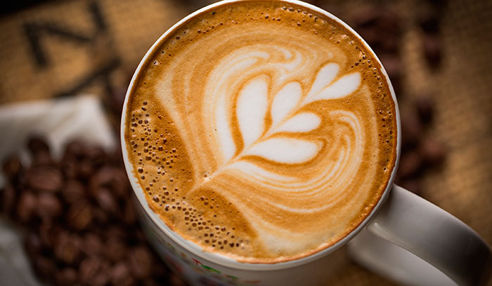
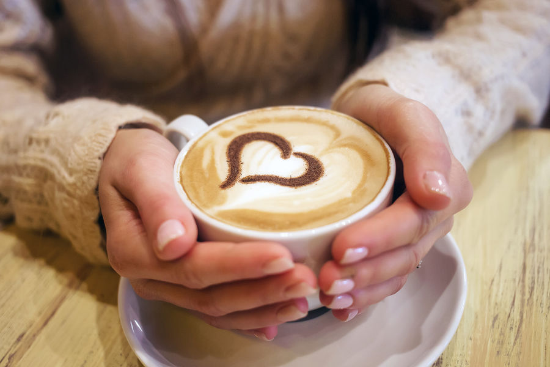
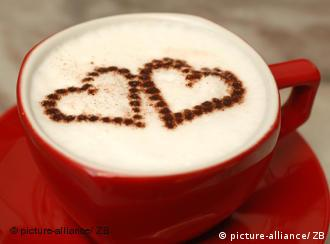

Кофе по-венски создал и популяризировал в Европе украинец Юрий из села Кульчицы. Об этом мы уже ранее писали подробно. Его приветствие каждому гостю его первой кофейни в Вене звучало как «Як справи, братику-серденько?», и говорят, что выражение “bratiku-serdenko” до сих пор в ходу у местных жителей.
Через 35 лет человечество отпразднует 500-летие от даты открытия первой кофейни в мире (1555 год, Стамбул, современная Турция). Однако другие источники утверждают, что эта дата на 25 лет ближе к современности, ибо утверждается, что первое кафе было в Дамаске в 1530 году, в столице современной Сирии. А ещё до этого состоялся запрет кофеен в Мекке в 1511 году, но точная дата открытия первой кофейни в Мекке не установлена. Вероятно, потому, что они там не были размещены в стационарных помещениях, а скорее были переносными точками разлива напитка под шатром на рынке. И, если это так, то 500-летие уже состоялось
1 килограмм кофе, который пьют космонавты на орбите Земли, стоит 20 000 долларов (из-за дороговизны его доставки туда). Но не пить его там нельзя – бодрость космонавтам ух как нужна!Частое употребление чёрного крепкого кофе способно снизить аппетит. Приятная новость для тех, кто хочет похудеть если не в это лето, то уже к следующему.
- Чтобы сделать кофейный напиток более освежающим и более интересным на вкус, некоторые гурманы добавляют в него свежие ягоды (особенно лесные) и фрукты. А сверху чашку можно посыпать тёртыми орехами. Кстати, кофе, помимо хорошей сочетаемости со многими напитками, едой и ингредиентами, также имеет и плохую сочетаемость с некоторыми. В частности, с жирной пищей (из-за стремительного повышения уровня сахара в крови после приёма такой пищи и кофе, что наносит двойной удар по организму). С такими блюдами как борщ или устрицы кофе не сочетается просто потому, что во рту образовывается мешанина вкусов, для многих отвратительная. Перчёная еда, употреблённая перед напитком, способна полностью смазать его вкус, а вино нейтрализует вкус кофе, как и кофе – вина.
- Вкус кофе по-новому раскрывается, если он приготовлен в габете – специальном стеклянном приборе, похожем на пробирку. Ещё не пробовали? Тогда вперёд! Кстати, этому способу приготовления уже более 150 лет!
- Знаменитые Бостонское Чаепитие и Великая Французская Революция планировались, в том числе, в кофейнях.
- В кофе целых 1200 химических элементов и соединений – и более 600 из них ответственны за вкус (так как при жарке они преобразовываются и распадаются в разной степени, вкус каждого зерна меняется по-своему).
- Кофе – второй по объёму в мире товар после нефти, котируемый на международных товарных биржах.
- Растворимый кофе появился в 1910 году в США.
- Даже появление веб-камер связано с кофе: в Кембриджском Университете вебка была изобретена, чтобы наблюдать за наполненностью ёмкости с кофе (и не ходить ногами, чтобы проверить это лично).Спа-курорт Янессун в Японии предлагает своим посетителям различные необычные ванны, среди которых ванна из зелёного чая и ванна из кофе. Зачем? Обеспечивать лучший тонус кожи, конечно же!
- Если вы выпьете примерно 100 чашек крепкого кофе подряд, то можете умереть.
- Профессия баристы в Италии – это дело всей жизни, а не подработки, как в Новом Свете. Именно поэтому там работают баристы всех возрастов, средний возраст которых составляет 45 лет.


